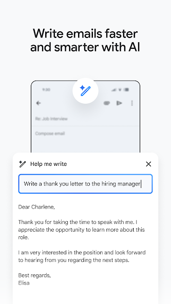

第一次用 Gmail？五分钟从下载到发第一封邮件
完全零基础也能看懂的 Gmail 安卓入门教程。从下载安装到第一次发邮件，再到三个新手最值得先碰的功能，一口气带你上手。
这篇文章能带你从完全不懂 Gmail 到用起来，不需要任何前置知识。
它到底是干嘛的——一句话说清楚
Gmail 就是 Google 家的邮箱应用，你可以把它想象成一个自带整理和分拣能力的电子信箱。普通信箱只是收信、放信、取信；Gmail 多了一堆聪明的功能：自动把促销邮件和重要邮件分开、发件人太多时帮你批量处理、出门休假还能自动回复。如果你在用 Google 全套服务（比如 Google 日历、Google 云盘），Gmail 和它们之间是打通的，体验会特别丝滑。想了解完整的功能清单，可以去它的官网看看。

五分钟上手：从下载到发第一封邮件
别担心，整个流程真的只需要五分钟。
第一步：下载安装
在手机的应用商店里搜 Gmail 就能找到，也可以从官方下载渠道获取安装包。下载安装完打开应用，它会引导你登录 Google 账户——如果还没有，现场注册一个也行，整个过程不超过两分钟。
第二步：认识主界面
登录后你会直接进入收件箱。界面很干净：顶部是搜索框，下面是一封一封的邮件。底部有三个标签页：收件箱、已发送、撰写（一支笔的图标）。左手边藏着侧边栏，点左上角那个汉堡图标就能拉出来，里面有全部邮件、已加星标、草稿箱、垃圾箱这些分类。
第三步：发第一封邮件
点右下角那支笔的图标，进入撰写界面。你会看到三个输入框：
- 收件人：填对方的邮箱地址，比如
someone@gmail.com - 主题：一句话说清这封邮件是关于什么的
- 正文：写信的内容
写完之后，点右上角三个点，选发送——第一封邮件就发出去了。简单吧？
第四步：收邮件
发完之后回到收件箱。如果有人给你发了邮件，Gmail 会自动同步过来（默认大约每 15 分钟一次，也可以手动下拉刷新）。点开一封邮件，底部会出现回复、全部回复、转发三个快捷按钮，点一下就能回信。
上手后先玩这三个功能
第一次用完 Gmail，别急着关掉——先花十分钟玩玩这三个功能，它们能帮你省掉后面好多麻烦。
功能一：长按批量处理邮件
收件箱里堆了几十封已读的促销邮件不想一封一封删？长按任意一封邮件（点发件人头像那块），这封就进入选中状态，然后再快速点选其他要清理的邮件——一下就能选中十几二十封。顶部工具栏会出现三个按钮：归档、删除、标记已读。批量归档或者删除，比一封一封点快十倍。
你会看到什么：选中的邮件变蓝色背景，顶部计数显示"N 封已选中"，工具栏里的按钮变成可点击状态。
这意味着什么：以后清理收件箱再也不用一封一封戳了，维护干净的收件箱只需要每天花两分钟。
功能二：附件的两种玩法
发邮件的时候需要加文件？点右下角的回形针图标，Gmail 会弹出两个选项：附加文件和插入云端硬盘文件。前者是从手机本地选文件，后者是从 Google 云盘里选——这是发大文件的最佳方式，完全不占邮件附件配额（Gmail 直接上传附件的上限大约是 25MB）。
收到带附件的邮件怎么办？Gmail 内置了 PDF、图片、文档的快速预览，直接点附件就能看，不用下载。觉得这个附件挺有用，想存起来以后用？点附件旁边那个 Google 云盘图标，一键存进你的云盘。
你会看到什么：邮件正文下方出现附件卡片，显示文件名和大小，卡片上有预览和保存按钮。
这意味着什么：传文件和存文件的体验跟用微信发图片一样简单，而且大文件完全不愁。
功能三：外出自动回复
休假前别忘了开这个功能——设置 → 滚动到外出自动回复 → 点开启，然后设置开始和结束时间、主题和正文。正文里说明你不在、什么时候回来、紧急情况下联系谁，保存之后就不用管了。休假期间所有发给你的邮件，对方都会自动收到一条回复。
有个小细节：同一个发件人每天最多收到一次自动回复，不会刷屏。如果同时开了「只回复联系人」，陌生人的邮件不会触发自动回复，这个选项可以根据你的工作性质决定要不要开。
你会看到什么：设置页面显示自动回复已开启，有一个倒计时告诉你还有多少天关闭。
这意味着什么：休假期间再也不用担心别人发邮件过来没回音了，回来后花十分钟整理积压的邮件就行。更多自动回复模板和配置细节可以参考googlegmail文档。

小白的三个常见疑问
疑问一：Gmail 里还能直接开视频会议？
是的，Gmail 安卓客户端内置了 Google Meet（Google 的视频会议服务，类似 Zoom）。侧边栏点 Meet 就能发起新会议，生成的会议链接可以直接通过 Gmail 发给其他人。收到带会议邀请的邮件时，正文上方会出现一个"加入视频会议"按钮，点一下就直接进会议室了，首次使用可能要允许相机和麦克风权限。
如果你不用 Meet 或者对视频会议有焦虑，可以在设置里关掉这个入口：设置 → 常规设置 → 关闭「在主菜单中显示 Meet」。
疑问二：Gmail 和 QQ 邮箱、163 邮箱比，到底好在哪？
最大的差异是生态整合。如果你在用 Google 全套服务，日历里排了会议，Gmail 会自动收到邀请邮件并且一键加入 Meet；云盘里的文件可以直接当附件发，不用下载再上传；搜索框支持高级语法（比如 from:boss@company.com is:unread 找出老板发的未读邮件），找旧邮件比 QQ 邮箱的搜索好用得多。
当然，如果你完全不用 Google 其他服务，只是单纯收发邮件，QQ 邮箱和 163 邮箱也完全够用。选哪个邮箱取决于你已经在用哪个生态。
疑问三：邮件太多、找不到想找的那封怎么办？
Gmail 的搜索比你想象的强大得多，而且语法很灵活。在搜索框里试试：
from:张三— 找出所有张三发的邮件subject:报价— 标题里带"报价"的has:attachment— 带附件的newer_than:3d— 最近三天内的
组合起来更厉害：from:李四 is:unread newer_than:1d 能找出李四昨天发的还没看的邮件。日常用多了，这个搜索能帮你在几百封邮件里一秒定位到想要的那封。
接下来可以往哪走
恭喜你，已经能熟练用 Gmail 收发邮件、批量清理、处理附件、开自动回复了。想再往前走一步的话，推荐先去研究一下 Gmail 的标签系统——标签比文件夹灵活得多，一封邮件可以同时打多个标签，用来整理不同项目或不同来源的邮件特别好用。设置里花十分钟就能学会，用起来绝对上瘾。这套资料在GitHub、Gitee、GitCode三个平台上都有备份，哪个用着顺手就去哪个。